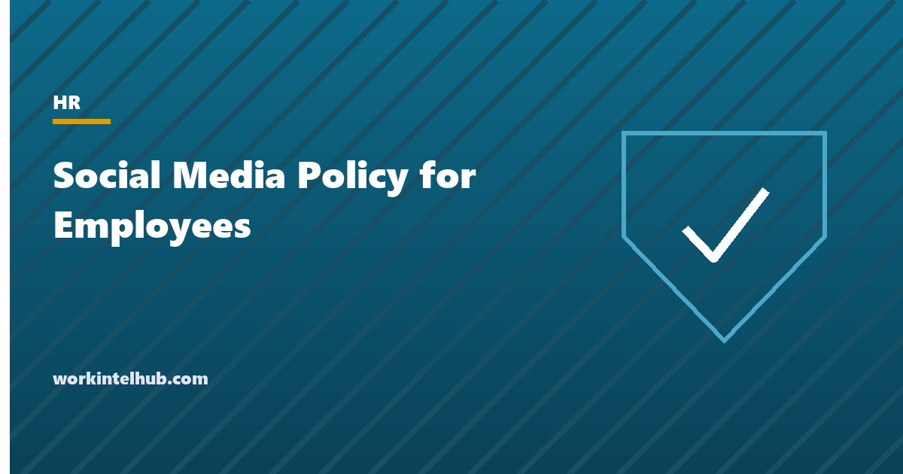

Social Media Policy for Employees

A social media policy for employees sets out what people may and may not post about the company, its customers and each other, on their own accounts and on the company's. The difficulty is that the obvious policy, "do not post anything negative about the company", is unlawful. Employees have a federally protected right to discuss their pay and working conditions in public, and the National Labor Relations Board has struck down dozens of policies that could be read to restrict it. A lawful policy is narrower and more useful: it protects secrets and private data, requires honesty when employees promote the company, keeps official accounts official, and leaves the rest alone.
The generator below writes that policy, with variants for regulated sectors. The rest of the page covers the four legal lines, what the policy should and should not say, and how to handle the post that goes wrong.
Social media policy generator
Nothing typed here leaves your browser. The policy is written to avoid the broad "do not post anything negative" rules the NLRB has found unlawful, and to satisfy the FTC's disclosure rule for employees who talk about their employer's products.
The four legal lines
| Rule | Source | What it means for the policy |
|---|---|---|
| Employees may discuss wages, hours and working conditions publicly, and act together about them | National Labor Relations Act section 7; the NLRB's Stericycle standard (2023) makes any rule an employee could reasonably read as restricting this presumptively unlawful | No bans on "negative", "disparaging" or "disrespectful" posts about the company; no requirement to get approval before posting; no ban on naming the employer; carve the right out expressly |
| Employees who promote the employer's products must disclose the relationship | FTC Endorsement Guides; the FTC updated the guides in 2023 and has fined companies over employee and fake reviews | A clear instruction to disclose employment in the post, a ban on fake reviews, and no incentives for undisclosed posts |
| Employers may not demand personal account passwords or access | Password-privacy laws in more than 25 states, including California, Illinois, Michigan and New York | Say the company will not ask for passwords or require managers as connections |
| Confidential and regulated information stays confidential | Trade secret law, confidentiality agreements, HIPAA, FINRA and SEC communications rules, government contract terms | A specific list of what cannot be posted, with the working-conditions carve-out so it is not read as a gag |
The first row is where most policies fail. "Be respectful" is lawful when it is tied to harassment and abuse of individuals; it is unlawful when it is used to discipline an employee for calling the company's scheduling practices unfair. The generator's respect clause draws exactly that distinction, and the social media monitoring page covers the employer's side: what it may lawfully look at, and the password laws in detail.
What the policy should and should not say
| Say | Do not say |
|---|---|
| Only named people post from official accounts | Employees must get approval before mentioning the company |
| Make clear personal opinions are your own | Do not post opinions about the company |
| Disclose that you work here when you promote our products | Share our marketing posts (with incentives and no disclosure) |
| Do not post trade secrets, customer data, unreleased products or internal documents | Do not post confidential information (undefined, which the NLRB reads as covering wages) |
| The harassment policy applies online; do not abuse individuals | Do not post anything negative, disparaging or that could embarrass the company |
| Refer media enquiries to communications | Do not speak to the media |
| Nothing here restricts discussing working conditions, union activity or reporting to agencies | (Silence on this point, which is how policies get read broadly) |
Regulated sectors add specifics the generator includes: patient-identifying images in healthcare, business communications in financial services, and contract information in the public sector. The policy sits in the handbook next to the cell phone policy and the monitoring policy, and all three should use the same working-conditions carve-out.
When a post goes wrong
- Classify it before acting. Is the post about working conditions (protected, even if rude), abuse of an individual (not protected), or disclosure of confidential data (not protected)? The first category gets no discipline, whatever the tone, and an employer that disciplines it faces an unfair labour practice charge that it will usually lose.
- Ask for removal of data, not opinions. A post with a customer's details in it should come down immediately; a post calling the bonus scheme a joke stays up.
- Treat early self-reporting generously. The policy says so because it is true: the employee who tells HR about the post before the customer does has solved most of the problem.
- Discipline through the normal process, documented under the progressive discipline policy, with the specific clause breached named. "Violated the social media policy" is not a reason; "posted a screenshot of the customer list" is.
- Do not go looking. Monitoring employees' personal accounts invites the password-law and protected-activity problems above; the monitoring page explains where the line is.
Key takeaways
- A lawful social media policy protects secrets and private data, requires disclosure when employees promote the company, and keeps official accounts official. It cannot ban negative posts about the company.
- Employees' right to discuss pay and working conditions publicly is protected; under the NLRB's 2023 standard any rule that could be read to restrict it is presumptively unlawful. Carve the right out expressly.
- The FTC requires employees who endorse the employer's products to disclose the relationship in the post; fake reviews are prohibited.
- More than 25 states ban asking for personal account passwords.
- Classify a problem post before acting: working conditions (protected), abuse of an individual, or confidential data.
Frequently asked questions
Can an employer ban employees from posting negative things about the company?
No. Employees have a protected right under the National Labor Relations Act to discuss pay, hours and working conditions with each other and publicly, and the NLRB's 2023 Stericycle standard treats any rule an employee could reasonably read as restricting that right as presumptively unlawful. Policies may prohibit harassment of individuals and disclosure of confidential data, which is a different thing.
What should a social media policy for employees include?
Who may post from official accounts; a request to make clear personal views are personal; a requirement to disclose employment when promoting the company's products; a specific list of confidential information that may not be posted; the harassment policy applied online; where media enquiries go; what to do if a post goes wrong; and an express statement that discussing working conditions, union activity and reporting to agencies is not restricted.
Do employees have to disclose that they work for a company when posting about its products?
Yes. The FTC's Endorsement Guides require a clear disclosure of any material connection between an endorser and the company, in the post itself, and employment is a material connection. The policy should say so, prohibit fake reviews, and avoid incentive schemes for undisclosed posts.
Can an employer ask for an employee's social media password?
Not in the more than 25 states with password-privacy laws, including California, Illinois, Michigan and New York, and it is poor practice everywhere. Employers may look at what is public and may act on posts brought to their attention, within the limits of protected activity.
Can an employee be fired for a social media post?
For posting confidential data, harassing a colleague or customer, or posting fake reviews, yes, through the normal discipline process with the specific breach documented. For criticising the company's pay, scheduling or management, even rudely, generally no, because that is protected concerted activity and discipline for it is an unfair labour practice.
Does the policy apply to personal accounts?
Yes, within the lines above: confidentiality, disclosure, harassment and the official-account rule apply to any account. The policy cannot require approval before posting, cannot ban naming the employer, and cannot restrict discussion of working conditions on personal accounts.